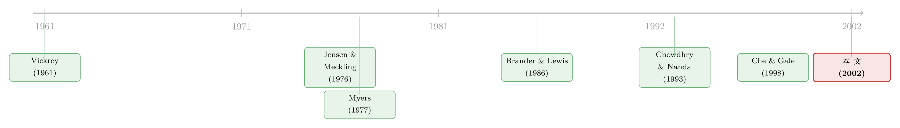

借钱越多，出价越软：一场拍卖里的「债务阴影」
本文读的是 Clayton & Ravid (2002, Review of Financial Studies)：当一家公司背着有风险的债去参加拍卖，它会系统性地压低自己的出价——而且因为对手看到了它的「软」，对手也会跟着压价。理论上，杠杆每多一分，均衡出价就低一分；用 1994–1995 年 FCC 频谱拍卖的真实竞价数据，作者发现自己负债高、对手负债也高，都会让出价更低。
1 一个反直觉的开场
先问一个看似简单的问题：一家公司去参加拍卖，它愿意出多高的价，跟它欠了多少钱有关系吗？
直觉上，你大概会说「没关系」。拍卖里你愿意付多少，取决于这件东西对你值多少——这是私人价值 (private value) 的常识。债是债，价值是价值，井水不犯河水。更何况，按经典的 MM 定理，资本结构 (capital structure) 本就不该影响一家公司的实际经营决策。
但这篇论文要告诉你的恰恰相反：负债不仅影响出价，而且影响得很有规律——欠债越多，出价越软。 更妙的是，这种「软」会传染：你一旦因为背着债而缩手缩脚，你的对手会看在眼里，于是他也敢跟着压价。一场拍卖，就这样被各家资产负债表上的数字悄悄改写了结局。
这其中的机制，不是什么玄学，而是公司金融里最古老的一个幽灵——债务积压 (debt overhang)。只不过这一次，它出现在了一个谁都没想到的舞台：拍卖场。
2 核心直觉：股东只关心「还完债之后还剩多少」
要把这件事讲透，先得想清楚一件事：公司是替谁出价的？
答案是替股东出价，而不是替整个公司出价。这二者在没有债的世界里是一回事，可一旦有了有风险的债，就分道扬镳了。
作者的模型里设定了一个很关键、也很干净的前提：每家公司 \(i\) 有面值为 \(B_i\) 的债要还，手上有现金 \(c_i\)，而且 \(B_i > c_i\)。这个不等式意味着什么？意味着如果这家公司没拍到东西，它就还不上债，要破产。换句话说，这件拍品是它唯一的救命稻草。作者把 \(D_i = B_i - c_i\) 称为「净债务积压 (net debt overhang)」，下文就叫它「债」或「杠杆」。
现在站在股东的角度算一笔账。假设公司以出价 \(b_i\) 赢得了价值 \(v_i\) 的东西，那么：
- 公司先拿到 \(v_i\)，付掉出价 \(b_i\)，毛利是 \(v_i - b_i\)；
- 但这笔钱要先拿去还债 \(D_i\)；
- 股东最后到手的，是 \(\max(v_i - b_i - D_i,\, 0)\)。
那个 \(\max(\cdot, 0)\) 就是有限责任 (limited liability) 的全部秘密：股东永远不必倒贴，最差也就是拿零。
于是问题来了。一个聪明的股东，会怎么定这个出价 \(b_i\)？他绝不会出到 \(b_i \geq v_i - D_i\)——因为一旦出到那个数，就算赢了，还完债也一分不剩，何苦呢。所以他真正的出价区间，是从 \(v_i - D_i\) 往下走。注意这个 \(v_i - D_i\)：它就像把真实价值 \(v_i\) 打了个「债务折扣」，公司不再是揣着 \(v_i\) 在出价，而是揣着一个缩了水的 \(v_i - D_i\)。债越重，这个有效价值就越低，出价的天花板也就被压得越低。
这正是 Myers (1977) 笔下那个经典的「债务积压」：当赚来的钱先要拿去填债主的坑，股东就没了投资的积极性，哪怕这个「投资」（这里就是竞拍）本身是划算的。（关于这副「债务这副药为什么不能全吃」的老药方，可参见《债务这副药，为什么不能全吃？——重读 Jensen 和 Meckling 五十年》。）
3 模型：把「债务折扣」一步步解出来
这是一篇有正经理论模型的论文，值得把推导摊开来看。作者考察了两种最接近 FCC 拍卖的机制：第一价格密封投标 (first-price sealed bid) 和英式拍卖 (English auction)。我们先看第一种，它的推导最干净。
3.1 设定
一个卖家，\(n\) 个买家，都风险中性。每家公司的价值 \(v_i\) 是从已知分布 \(F_i\) 中独立抽取的；自己知道自己的 \(v_i\)，但只知道对手的分布。每家公司的债 \(D_i\) 是公共知识。赢家付出自己的出价，输家颗粒无收且破产。
第一价格拍卖下，公司 \(i\) 的均衡出价函数要解的，是下面这个最大化问题：
这个式子的直觉一句话就能说清：一个好的出价，是在「赢了能拿多少」和「能不能赢」之间做权衡。 把出价从天花板 \(v_i - D_i\) 往下压，赢的概率 \(\Pr(b > b_{-i})\) 在掉，但万一赢了股东能拿的钱在涨。公司一直压到两者的边际恰好抵消为止。
3.2 一个换元，难题迎刃而解
接着，一个自然的问题是：这个带着 \(D_i\)、还带着 \(\max(\cdot,0)\) 的式子，怎么解？
作者用了一个漂亮的换元。定义随机变量
$$ w_i = v_i - D_i . $$
这一步是整篇推导的枢纽。它说的是：一家「价值 \(v_i\)、负债 \(D_i\)」的公司，在出价行为上，完全等价于一家「价值为 \(w_i = v_i - D_i\)、但没有债」的公司。债务的全部作用，就是把真实价值 \(v_i\) 平移成了一个更小的「债务调整后价值」\(w_i\)。
于是那个棘手的有限责任问题就被消化掉了——作者证明（论文中的「the relation」）：任何让「无限责任下股东赢时收益」最大化的出价，也让「有限责任下股东收益」最大化。两个看似不同的问题，最优解是同一个。
3.3 均衡出价：经典公式 + 债务折扣
剩下的，就是套用对称独立私人价值拍卖的标准结论了。若所有 \(w_i\) 独立同分布、记 \(F\) 为 \(w\) 的累积分布函数，则均衡出价为 [见 Milgrom (1989)]：
$$ b_i^{*} = w_i - \frac{\displaystyle\int^{w_i} \big[F(\tau)\big]^{n-1}\, d\tau}{\big[F(w_i)\big]^{n-1}} $$
再把 \(w_i = v_i - D\) 代回去（对称情形下所有公司负债相同，记为 \(D\)），用 \(v\) 的分布函数 \(G\) 重写，就得到论文的核心方程 (2)：
$$ b_i^{*} = v_i - D - \frac{\displaystyle\int^{v_i} \big[G(\eta)\big]^{n-1}\, d\eta}{\big[G(v_i)\big]^{n-1}} $$
看这个式子的结构：右边后两项，就是经典拍卖理论里「把出价压到价值之下」的那块标准「收缩」（shading）；而最前面多出来的那个 \(-D\)，就是杠杆硬生生砍掉的一刀。这一刀的存在，让一切都不一样了。
由此，作者一口气推出三个命题：
- 命题 1：均衡出价 \(b_i\) 对 \(D\) 递减（对方程 (2) 求一阶导即得，因为 \(-D\) 直接进了出价）。
- 命题 2：期望最高价、也就是卖家的期望收入，随 \(D\) 递减。
- 命题 3：每家公司的期望利润随 \(D\) 递增。
第三条尤其有意思：负债反而让竞拍公司更赚钱了。 因为大家都缩手，竞争软化，赢家用更低的价格拿走了东西。代价是谁付的？是卖家——它的拍卖收入被各家的资产负债表悄悄掏走了一块。
3.4 英式拍卖：结论一样，但要小心
英式拍卖里，没有债时的经典结论是：每个人一直加价到自己的真实价值 \(v_i\) 才停手。有了债呢？
作者的第一个观察是：公司一定愿意一直叫到 \(b_i = v_i - D_i\) 这个点（命题 4 给出的均衡停止区间是 \(b_i^{*} \in [v_i - D_i,\, \infty)\)）。理由还是有限责任：叫到 \(v_i - D_i\) 以上、并赢得拍卖，股东收益恰为零，跟输掉拍卖（也是零）没区别，所以公司在 \(v_i - D_i\) 以上是「无所谓」的。
但「无所谓」是个麻烦——它意味着均衡有一整段区间，不唯一。怎么办？作者引入一个很现实的修正：叫价是有成本的（哪怕只是经理花的力气）。一旦叫价有成本，叫到 \(v_i - D_i\) 以上就纯属赔本赚吆喝——没有任何好处，却要付成本。于是：
- 命题 6：若经理叫价有个人成本，他在英式拍卖中愿意出的最高价随杠杆下降。
- 命题 7：对手杠杆每上升一分，在其他条件不变时，会（弱）压低本公司的出价、从而压低成交价。
命题 7 正是那个「传染」效应：你看到对手因为背债而早早收手，你也就敢在更低的价位停下。两种拍卖殊途同归——杠杆压低出价，且压价会在竞争者之间相互放大。
这里其实藏着 Jensen & Meckling (1976) 的两个老幽灵。压低出价，本质上是投资不足 (underinvestment)——股东放弃了一个本该参与的「项目」。同时它也在转移风险 (risk shifting)：出价越低，赢的概率越小，可一旦赢了股东的回报越高。作者敏锐地指出，债务契约 (bond covenant) 往往能拦住风险转移，却几乎拦不住投资不足——没有哪条契约能逼着公司去拍卖场上举牌。所以在 FCC 拍卖这个场景，理论格外适用。
4 把理论拖到现实：FCC 频谱拍卖
理论再漂亮，也得有人验。作者选的战场是 1994–1995 年美国联邦通信委员会 (Federal Communications Commission, FCC) 的频谱拍卖——这是把无线通信频段卖给运营商的一系列拍卖，由博弈论专家专门设计，采用了一种叫「同步递增拍卖 (simultaneous ascending auction)」的创新形式：多个标的同时开卖，每一轮各家对一个或多个标的密封报价，只要还有人加价就进入下一轮，直到无人再加，价高者得并按自己的出价付款。
为什么挑它？因为它同时长着两种拍卖的影子：付款规则像第一价格（赢家付自己的出价），而一轮轮公开报价、人人可再加的结构又像英式拍卖。作者的模型恰好覆盖了这两端。正如设计者自己承认的——McAfee 和 McMillan (1996) 直言「频谱拍卖比拍卖理论里的任何东西都复杂，没有哪个定理能、也别指望能写出最优的拍卖形式」。所以作者没打算复刻全部细节，而是用两个最简模型抓住杠杆这一条主线。
识别的逻辑很直接：把观察到的竞价，跟两类变量相关起来——竞拍公司自身的财务特征（核心是杠杆）和区域特征，看谁最能解释出价的高低。理论给出的两个可证伪预测是：（一）自己负债越高，出价越低（命题 1）；（二）对手负债越高，自己出价也越低（命题 7）。
结果与理论一致：竞拍公司自身更高的负债，以及竞争对手更高的负债，都倾向于带来更低的出价。 这两点中，第二点尤其难得——它直接验证了「杠杆会在对手之间传染」这个不那么显然的预测，而不只是「自己缺钱就少出价」这种近乎同义反复的直觉。
老实说，论文正文我只读到了理论部分，实证一节（Section 2）的回归表格与具体系数、t 值并未呈现在我手边的材料里。所以这里只能忠实转述作者声明的定性方向，而不替它编造任何具体量级。读者若要引用精确数字，请回到原文表格核对。这一点我宁可承认，也不愿杜撰。
5 文献脉络
这篇论文坐在两条河流的交汇处。
一条河是拍卖理论。源头是 Vickrey (1961)，他在简化假设下证明了英式与第一价格拍卖期望收入相等；Myerson (1981)、Riley & Samuelson (1981) 把它推广成著名的「收入等价定理 (revenue equivalence theorem)」。但很快人们发现，一旦放松假设，等价就会失效——而 Che & Gale (1998) 的工作离本文最近：他们让竞拍者面临财务约束 (financial constraint)，结果收入等价崩塌，第一价格拍卖反而能给卖家带来更高收入。本文与 Che-Gale 的区别在于，这里的公司并非「掏不出钱」，而是有风险的债让股东的算盘变了——是有限责任、不是预算上限，在驱动出价。
另一条河是把杠杆当作战略变量的公司金融文献。Brander & Lewis (1986) 是奠基之作，他们指出有限责任会让负债公司在寡头竞争里更激进；Maksimovic (1988)、以及实证上的 Chevalier (1995)、Phillips (1995) 都在这条线上。但请注意一个微妙的反转：在 Brander-Lewis 的产品市场里，杠杆让公司更激进；而在本文的拍卖里，杠杆让公司更保守（出价更低）。同一个有限责任，在不同的战略环境里指向相反的行为——这正是为什么需要一个针对拍卖的专门模型。（关于「举债作为竞争武器」的另一种用法，可参见《举债，竟是为了「逼」别人把好钱让出来》；关于杠杆如何在产品市场里改写胜负，见《衰退里，谁先「松手」抢市场？》。）
还有一支与本文「划清界限」的文献：Chowdhry & Nanda (1993) 在收购语境里把债当作「高报价的承诺工具」——通过发行同等优先级的新债稀释老债主，制造一池「免费的钱」去抬高报价、吓退对手。本文反其道而行：作者假设债主价值不能被新债侵占，公司也没有 Fishman (1988) 那种两阶段决策，因此不存在人为抬高报价的动机，杠杆只会压低出价。

把这条脉络收束起来：拍卖理论关心机制设计，公司金融关心资本结构如何影响行为，而这篇论文是少数把两者焊在一起的尝试——它问的是「资产负债表如何写进拍卖均衡」，并且第一次拿真实的拍卖竞价数据去验。
6 评论与延伸（Q&A + 研究方向）
(a) 几个可能的疑问
Q：这跟 Che & Gale (1998) 的「财务约束拍卖」到底有什么不同？
区别在驱动力。Che-Gale 里公司是「掏不出那么多钱」（预算上限，willingness ≠ ability to pay）；本文里公司掏得出钱，但有风险的债加上有限责任，让股东只关心「还完债后剩多少」。前者是流动性约束，后者是债务积压+有限责任。两者都能让收入等价失效，但机制不同，对策也不同。
Q：\(B_i > c_i\)（输了就破产）这个假设是不是太极端了？
是个简化，但作者讨论过更一般的情形：若资产价值随机、公司输了也只是「有一定概率破产」，结论会被稀释但不会反向——公司若确信不会破产就当 \(D=0\) 出价，若确信会破产就照模型出价，介于两者之间则出价仍随 \(D\) 递减。所以「输了必破产」是把效应放到最大的极端，方向是稳健的。
Q：为什么负债反而让竞拍公司更赚钱（命题 3）？这不反直觉吗？
因为拍卖是零和博弈的一种：大家一起缩手，竞争软化，赢家用更低价格拿货。多出来的利润不是凭空变出来的，是从卖家的收入里转移过来的（命题 2：卖家收入随 \(D\) 递减）。所以「负债提高竞拍公司利润」和「负债降低卖家收入」是同一枚硬币的两面。
Q：如果拍品价值本身不确定，结论还成立吗？
这是作者诚实标注的边界。在私人价值下，压低出价同时意味着「增加风险」（赢的概率低、但赢了回报高）。可若拍品是共同价值 (common value)、价值本身不确定，转移风险就有了第二条路：抬高出价也能增加风险（赢面大、押中高价值的赌注大）。此时杠杆对出价的方向变得模糊，成了纯经验问题。好在 FCC 拍卖的设计者认为共同价值成分不重要 [Salant (1997)]，所以私人价值分析适用。
Q：英式拍卖那段，为什么非要引入「叫价成本」？
因为不引入的话，均衡出价是一整段区间 \([v_i-D_i, \infty)\)，杠杆只锁住了下界，结论太弱。加一个微小的叫价成本，叫到 \(v_i-D_i\) 以上就纯赔本，于是最高出价被唯一地钉在 \(v_i-D_i\) 附近，命题 6、7 才站得住。这是把「不唯一的弱结论」变成「唯一的强结论」的技术性必需品。
Q：这套逻辑能不能反过来——公司故意加杠杆来「软化」自己、诱导对手也让价？
理论上是个诱人的战略：先承诺高杠杆，让对手相信你会出价保守，从而对手也敢压价，最后大家一起低价成交、竞拍方共赢。但这需要杠杆可信且先于拍卖被观察到。本文把杠杆当外生给定，没有把「战略性举债」内生进来——这恰恰是后续研究的一个缺口（见下）。
(b) 几个可能的研究问题与提案
1. 把「战略性加杠杆」内生进拍卖前的阶段。
【经济故事】本文证明了高杠杆压低出价、且竞拍方集体获益（卖家受损）。那么一个自然的两阶段博弈是：拍卖前各家先选债务水平，预期到它会软化整场竞争。会不会出现「共谋式去杠杆/加杠杆」的均衡？这对反垄断和拍卖设计都有含义——卖家也许该在资格审查里就盯住竞拍者的资产负债表。 【可行性】中。理论建模 doable；实证上需要拍卖前的杠杆变动数据，识别「为拍卖而调整资本结构」很难，存在反向因果，可能需要找一个外生改变发债成本的冲击做工具变量。
2. 用公司债/信用市场数据检验「杠杆软化竞拍」是否外溢到债券一级市场的承销竞价。
【经济故事】债券承销、资产处置拍卖、不良资产竞买，本质都是拍卖。背债重的金融机构在这些场子里是不是也系统性出价更低？这能把本文从频谱拍卖推广到信用市场。 【可行性】中高。承销团竞价、破产资产拍卖数据可得（如不良债权、DIP 资产处置）；竞买方杠杆可从财报取得。识别上仍需处理「谁来参与拍卖」的选择问题。
3. 外资竞拍者 vs. 本土竞拍者：杠杆效应是否因「破产成本的跨境差异」而不同？
【经济故事】本文的 \(D_i = B_i - c_i\) 依赖「输了就破产」。但不同法域的破产成本、债主追偿权差异巨大。外资竞拍者面对的有效债务积压可能与本土不同，从而出价行为系统性偏离。这能把外资持有人/跨境治理的文献接进拍卖。 【可行性】中。需要跨国的拍卖竞价微观数据（如各国频谱、油气区块拍卖）配上竞拍方国别与杠杆，样本可能稀疏，识别有挑战但 doable。
4. 流动性冲击作为杠杆的「时变」放大器。
【经济故事】把模型里的 \(c_i\)（手上现金）换成随宏观流动性波动的变量：信用收紧时 \(c_i\) 下降、\(D_i = B_i - c_i\) 上升，于是同一家公司在流动性寒冬里出价更软。这给「危机里拍卖成交价为何塌方」提供了一个资产负债表渠道的解释。 【可行性】高。频谱/国债/大宗拍卖在不同流动性环境下的竞价数据相对可得，宏观流动性指标成熟，可做时变面板识别。
7 我的判断
贡献。 这篇论文最漂亮的地方，是用一个换元 \(w_i = v_i - D_i\) 把「资本结构」干净利落地嵌进了「拍卖均衡」，并由此得到一个清晰、可证伪、且方向稳健的预测：杠杆压低出价，且压价在对手间传染。它在拍卖理论和战略性资本结构两条文献之间架了一座少有人架的桥，而且难得地拿真实竞价数据做了检验，而不止于黑板推导。命题 3「负债提高竞拍方利润、降低卖家收入」对拍卖设计与反垄断的含义，至今值得回味。
对识别的担忧。 我有两点保留。其一，实证里的杠杆几乎不可能是外生的——愿意背重债去拍卖的公司，本身在风险偏好、成长机会上就与众不同，「自身杠杆→低出价」的相关，可能混入了未观测的公司异质性。理想的识别需要一个只改变杠杆、不改变价值评估的外生冲击。其二，「同步递增拍卖」的真实规则（动态资格、撤标、多标的互补性）远比模型复杂，把它压成「第一价格 + 英式」的混合，可能漏掉了在多标的协同竞价里杠杆扮演的别样角色。
后续想看到什么。 我最想看的，是把杠杆从「外生给定」变成「拍卖前的战略选择」，看会不会浮现出共谋式的资本结构均衡；以及把这套逻辑搬到公司债与信用市场的拍卖里，用更现代、更大样本的竞价数据，配上一个可信的外生杠杆冲击，把这个二十多年前的优雅预测重新、更硬地验一遍。
参考文献
Brander, J., and T. R. Lewis (1986). Oligopoly and Financial Structure: The Limited Liability Effect. American Economic Review 76, 956–970.
Che, Y., and I. Gale (1998). Standard Auctions with Financially Constrained Bidders. Review of Economic Studies 65, 1–21.
Chowdhry, B., and V. Nanda (1993). The Strategic Role of Debt in Takeover Contests. Journal of Finance 48, 731–745.
Clayton, M. J., and S. A. Ravid (2002). The Effect of Leverage on Bidding Behavior: Theory and Evidence from the FCC Auctions. Review of Financial Studies 15(3), 723–750.
Fishman, M. (1988). A Theory of Preemptive Takeover Bidding. Rand Journal of Economics 19, 88–101.
Jensen, M., and H. Meckling (1976). Theory of the Firm: Managerial Behavior, Agency Costs and Ownership Structure. Journal of Financial Economics 3, 305–360.
McAfee, R. P., and J. McMillan (1996). Analyzing the Airwave Auctions. Journal of Economic Perspectives 10, 159–175.
Milgrom, P. (1989). Auctions and Bidding: A Primer. Journal of Economic Perspectives 3, 3–22.
Myers, S. C. (1977). Determinants of Corporate Borrowing. Journal of Financial Economics 5, 147–176.
Myerson, R. (1981). Optimal Auction Design. Mathematics of Operations Research 6, 58–73.
Riley, J., and W. Samuelson (1981). Optimal Auctions. American Economic Review 71, 381–392.
Salant, D. (1997). Up in the Air: GTE's Experience in the MTA Auction for Personal Communication Services Licenses. Journal of Economics & Management Strategy 6, 549–572.
Vickrey, W. (1961). Counterspeculation, Auctions, and Competitive Sealed Tenders. Journal of Finance 16, 8–37.